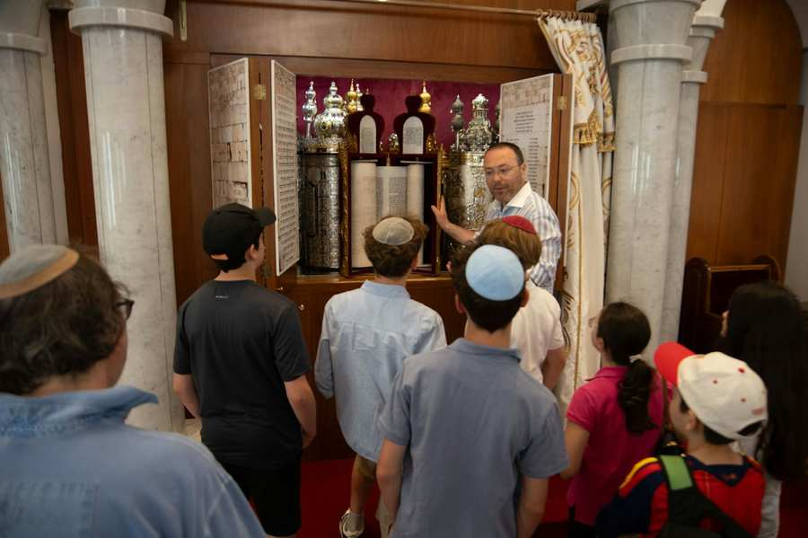
IKG/Kanfer
Der BBMC Jahrgang hat in der vergangenen Session am Sonntag einen besonderen Ausflug unternommen und verschiedene Synagogen in Wien besucht. Dabei hatten die BBMC Kids die Möglichkeit, die vielfältige Kultur und das gelebte jüdische Leben unserer Gemeinde in all seinen Facetten besser kennenzulernen. Gemeinsam wurden unterschiedliche Riten, Bräuche und Traditionen entdeckt und erlebt – von Spiritualität und Gebet bis hin zu Mikwe, koscherem Essen und den damit verbundenen Vorbereitungen und religiösen Bedeutungen.
Unsere Reise begann am Judenplatz, einem der historisch bedeutendsten Orte jüdischen Lebens in Wien. Awi Blumenfeld (Leiter des Instituts für jüdische Religion an der KPH Wien/Niederösterreich) gab den Teilnehmerinnen und Teilnehmern einen Einblick in die Geschichte der mittelalterlichen jüdischen Gemeinde und die Bedeutung jüdischer Erinnerungskultur in Wien bis heute.
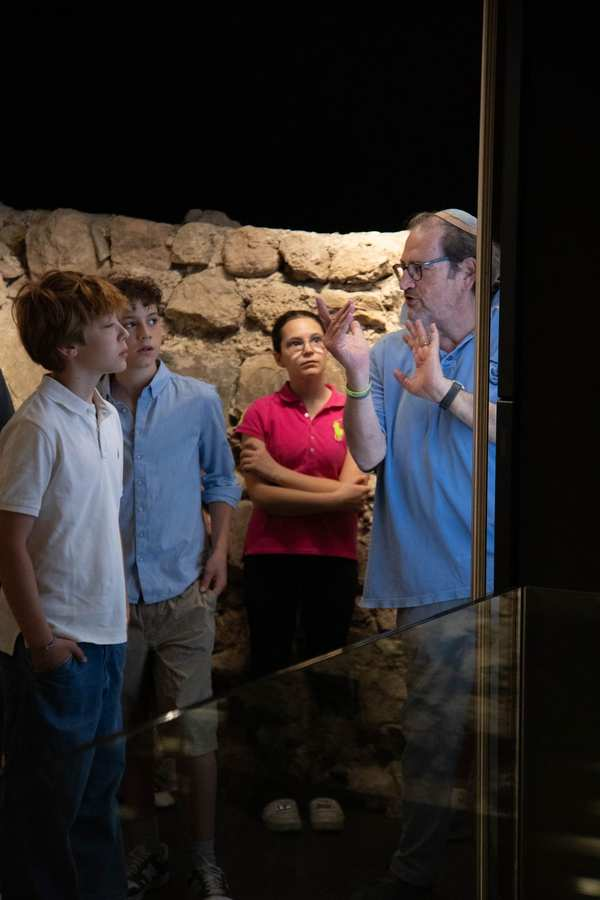
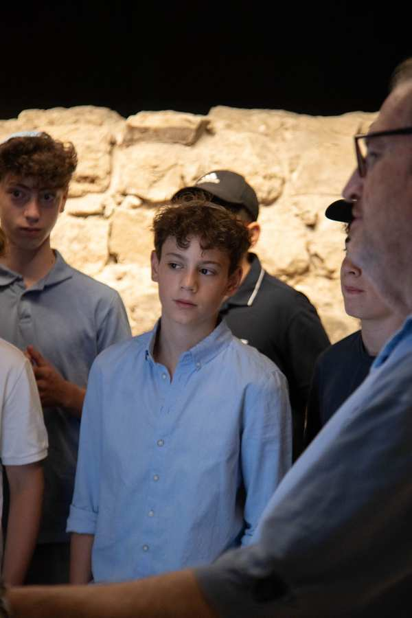
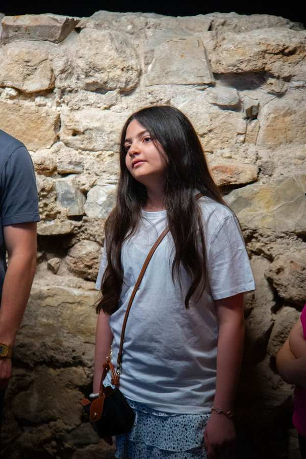
Ein weiterer Halt war die sephardische Synagoge in der Tempelgasse 7, in der IKG Vizepräsident Michael Galibov die Gruppe empfing. Die Kinder erfuhren mehr über die Geschichte der Synagoge und die Entwicklung jüdischen Lebens im zweiten Bezirk. Dabei wurde auch über die Zerstörung der ursprünglichen Synagogen während der NS-Zeit und den Wiederaufbau jüdischer Gemeinschaft in Wien nach 1945 gesprochen. Besonders spannend war dabei der Einblick in die unterschiedlichen religiösen Strömungen innerhalb des Judentums sowie die Bedeutung von Gemeinschaft und gelebtem Glauben im Alltag.
Im Rahmen des Ausflugs wurde auch die Mikwe in der Machsikei Hadass/ Wiener Jeshiwa besucht– das rituelle Tauchbad, das im Judentum eine wichtige spirituelle und religiöse Rolle spielt. Die Kinder erfuhren mehr über Reinheit, Vorbereitung und die symbolische Bedeutung der Mikwe im jüdischen Leben sowie über Traditionen rund um Schabbat, Feiertage und koscheres Essen.
Besonders spannend wurde dieser Teil des Programms durch eine praktische Demonstration: Die Kids erhielten ein BBMC-Teetasse, das gemeinsam in der Mikwe „gekaschert“ wurde. Dabei lernten die Kinder, wie neu erworbenes Geschirr durch das rituelle Untertauchen in der Mikwe für den Gebrauch in einem jüdischen Haushalt vorbereitet wird. Diese unmittelbare Erfahrung machte religiöse Praxis für die Kinder auf verständliche und lebendige Weise erlebbar und vermittelte einen authentischen Einblick in den jüdischen Alltag.
Unser Rundgang endet mit einem gemeinsamen Essen im Restaurant Novellino, bei dem sich die BBMC Kids noch mal über das beim Rundgang erlebte austauschen konnten.
Der gemeinsame Ausflug bot den Kindern nicht nur die Möglichkeit, verschiedene Synagogen kennenzulernen, sondern auch Fragen zu stellen, persönliche Eindrücke zu sammeln und die Vielfalt jüdischen Lebens in Wien aktiv zu erleben.
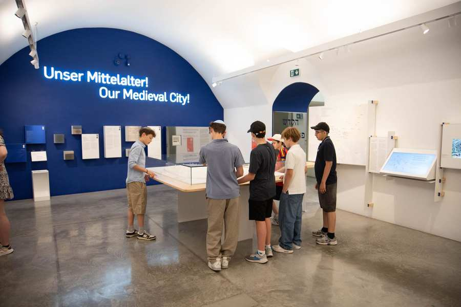
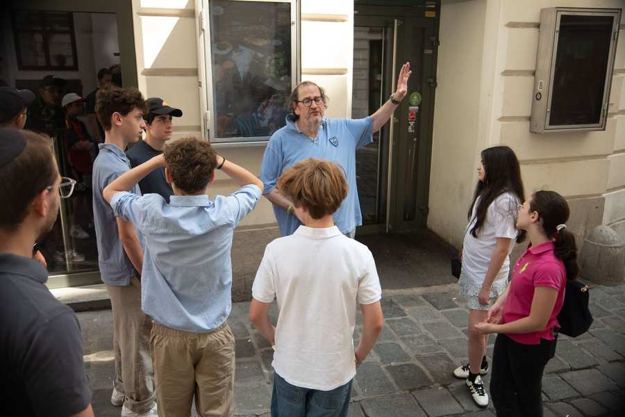
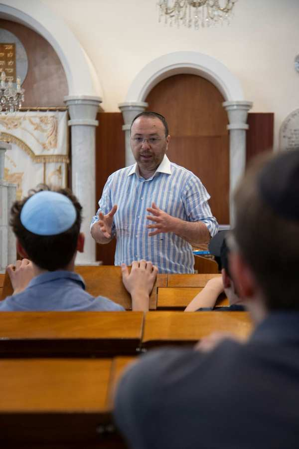
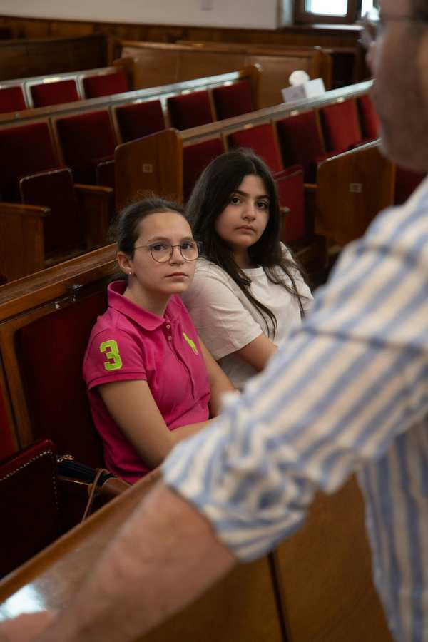
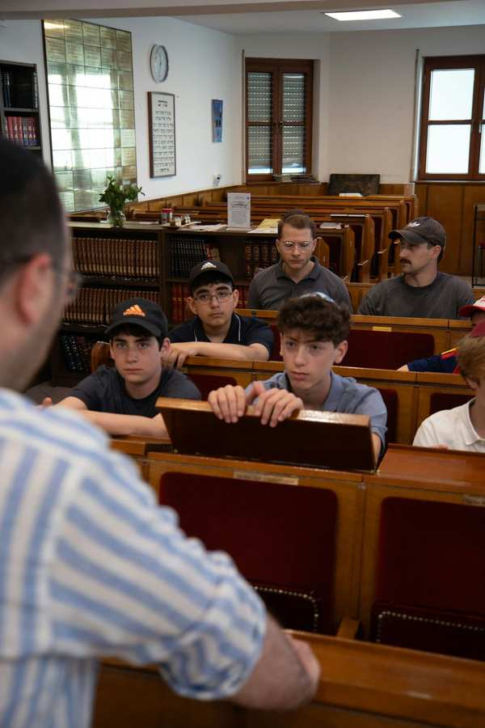
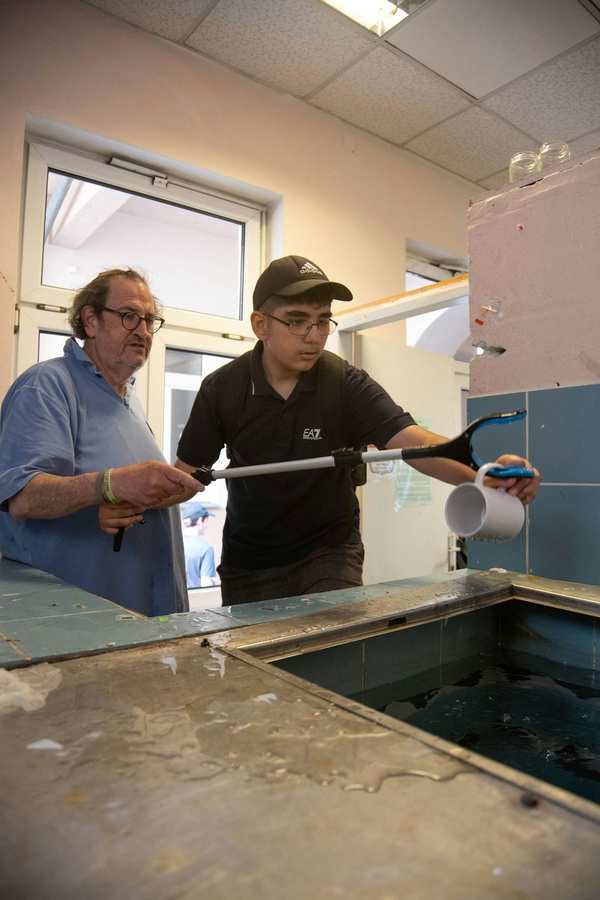
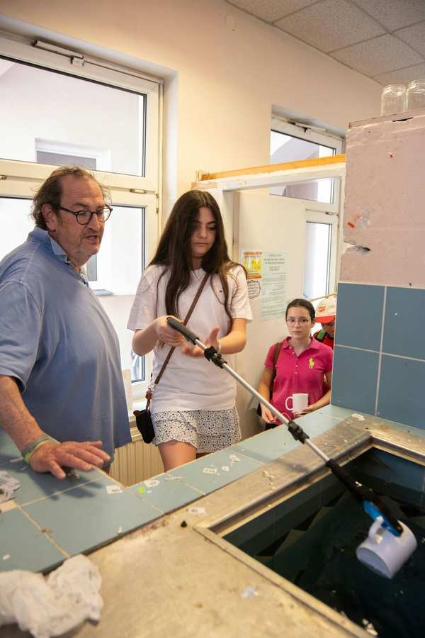
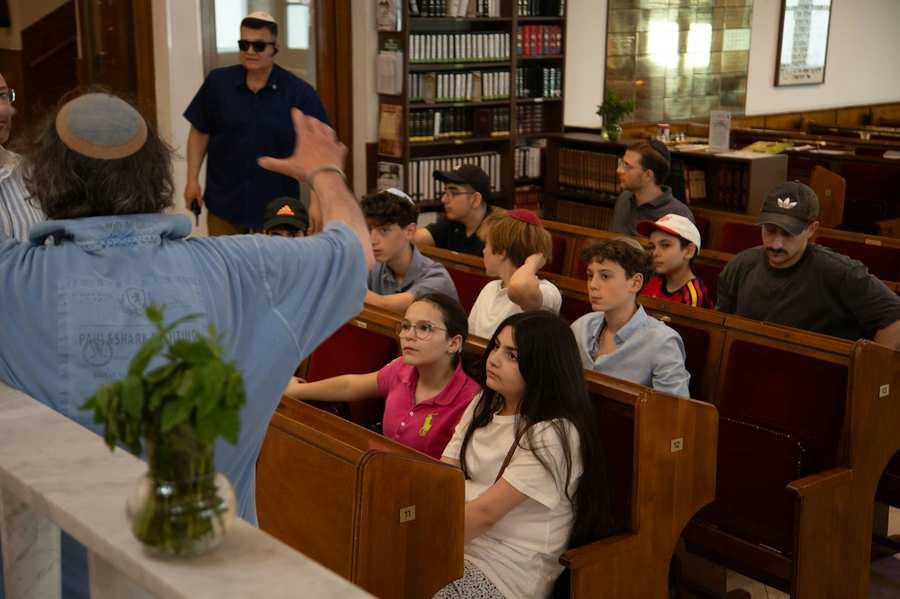
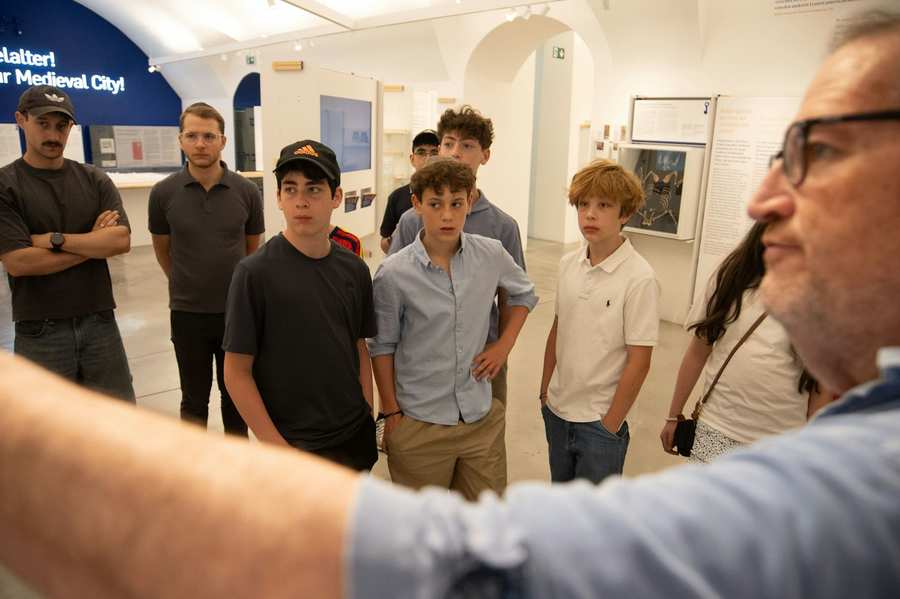
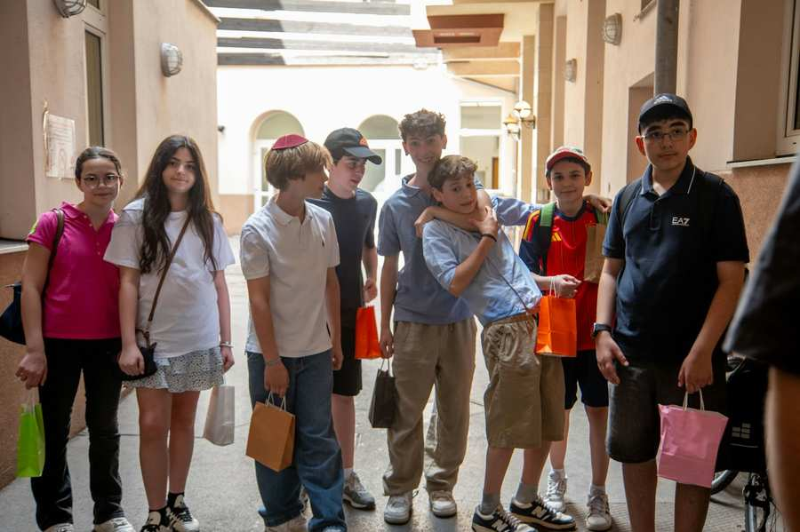
Fotos: Raphael Kanfer